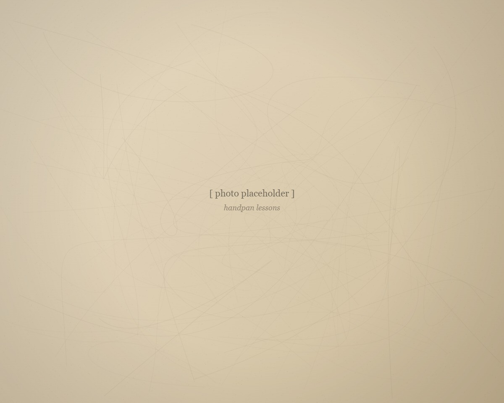

Noom Sound Studio · Handpan lessons
Lamai · Koh Samui
Lessons run on our open-air terrace in Lamai, or at your hotel or villa anywhere on the island. Instruments provided. Most people make a good sound in the first ten minutes.

The instrument
A handpan is a steel drum you play with your hands. It is round, about the width of a bicycle wheel, and shaped like two shallow bowls joined at the rim. The top face has a dome in the middle and seven or eight tuned dents around it. You touch a dent with your fingers and the note rings on for several seconds.
The sound sits between a bell and a harp. It carries, but it never turns loud. You can play one on a terrace at dusk and hear the sea underneath it.
The instrument is young. The first one was built in Switzerland in 2000. There is no exam syllabus behind it and no repertoire you are expected to know. You sit down, you play, and what comes out belongs to you.
Why beginners do well
Every handpan is tuned to a single scale. The maker chooses the notes and hammers them into the steel, so the instrument holds only notes that belong together. Play any two and they agree. Play all of them in any order and it still sounds like music. Nothing to avoid, no keys to learn, no sheet to read.
This is the strongest thing we can tell you, and it is true: most people make a good sound in the first ten minutes. Your hands do not need training before the instrument gives something back. That is why we start people here rather than on a guitar.
The first part of a lesson goes on touch — how to strike the steel so the note opens instead of clicks. After that we work on time. Where your hands land, how long you leave between notes, how a pattern holds together while you breathe. The notes are given to you. What you build is your sense of pulse.
Prices
Every option runs at the terrace in Lamai with instruments provided, or at your place. Message us and we find a time that fits your stay.
One session · first taste
Meet the instrument. Feel how it plays, sound your first notes, and find out whether handpan is for you. No commitment and no experience needed. Continue with the 3-Day Handpan Journey and half the demo lesson cost is deducted from the Journey price.
Message to book →10 hours · three days · certificate
Our signature course, made for people passing through the island. Ten hours over three days, from first notes to rhythm, patterns and improvisation. You get a handpan to practise on during your stay, video lessons to keep going after you fly home, your own two-minute piece recorded on the terrace, and a certificate.
Message to book →Eight lessons · two hours each · 16 hours
For people staying longer, or coming back. Technique, rhythm, repertoire and a practice you can keep, built at your own pace across eight sessions.
Message to book →Group lessons are ฿1,000 more per extra player, up to three, for couples, friends or travel companions.
A two-day sound-healing handpan course, six hours, ฿6,000, focused on slow playing for sessions.
We usually reply within a few hours.
Where
Most lessons happen on the Noom terrace in Lamai. It sits five minutes inland from Lamai beach, in the forest above the sea. Park at the bottom and take the stairs. The terrace is open on three sides and covered overhead, so lessons run in the rain.
We also come to you. Hotel, villa or retreat, anywhere on Koh Samui — Chaweng, Maenam, Bophut, Choeng Mon or the quiet south. We bring the instruments and set up wherever the room is calmest.
You need nothing with you. Instruments, mats and drinking water are here. Wear clothes you can sit cross-legged in, and come with short nails if you can, because nails get between your fingers and the steel.
Who teaches
Lessons are taught by Can. He is Turkish, started playing handpan in 2016, and began teaching in 2024. He plays handpan, bowls and drums, and he teaches rhythm and music theory alongside the instrument.
He is certified in Integral Sound Healing by the Academy of Sound Healing (2024) and in Advanced Sound Facilitation by Shantika Academy (2025). He has held over one hundred sessions, in Turkey and here on Samui, and takes three or four new students most months.
He teaches from how sound behaves: which notes sit well together, why a bowl keeps ringing after you let it go, how a room changes what you hear. He moved to Samui in June 2025 to spend his time on handpan and sound therapy instead of a commercial career.
More about Can and Melie on the about page.
Questions
Book a lesson
Tell us the dates you are on the island and we will find a time.
We usually reply within a few hours.